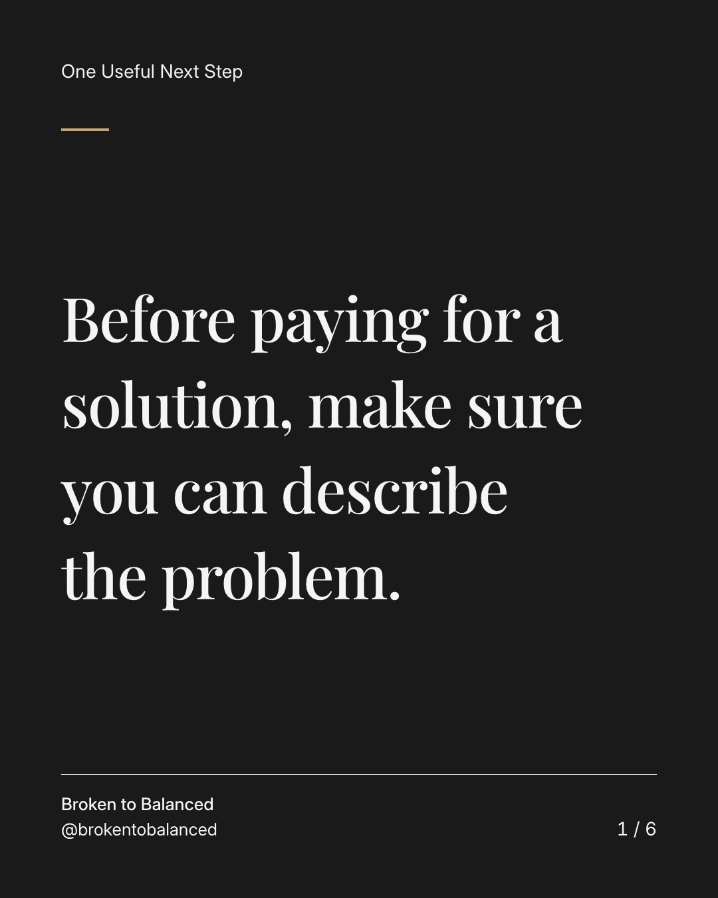
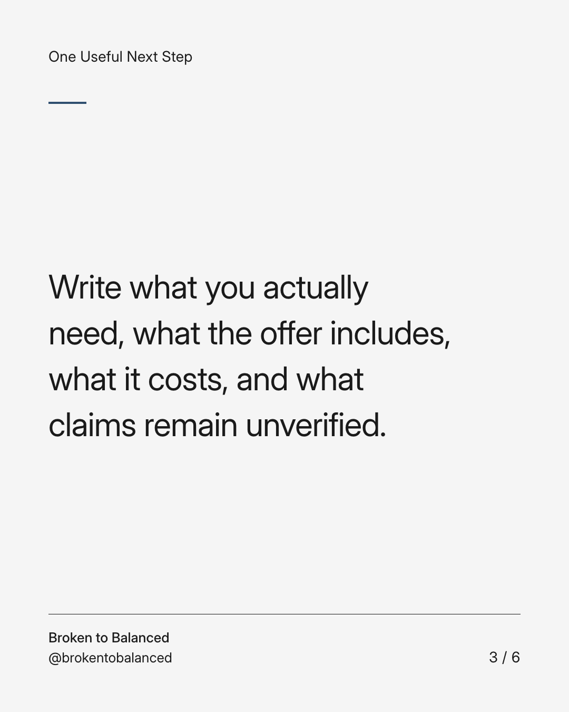
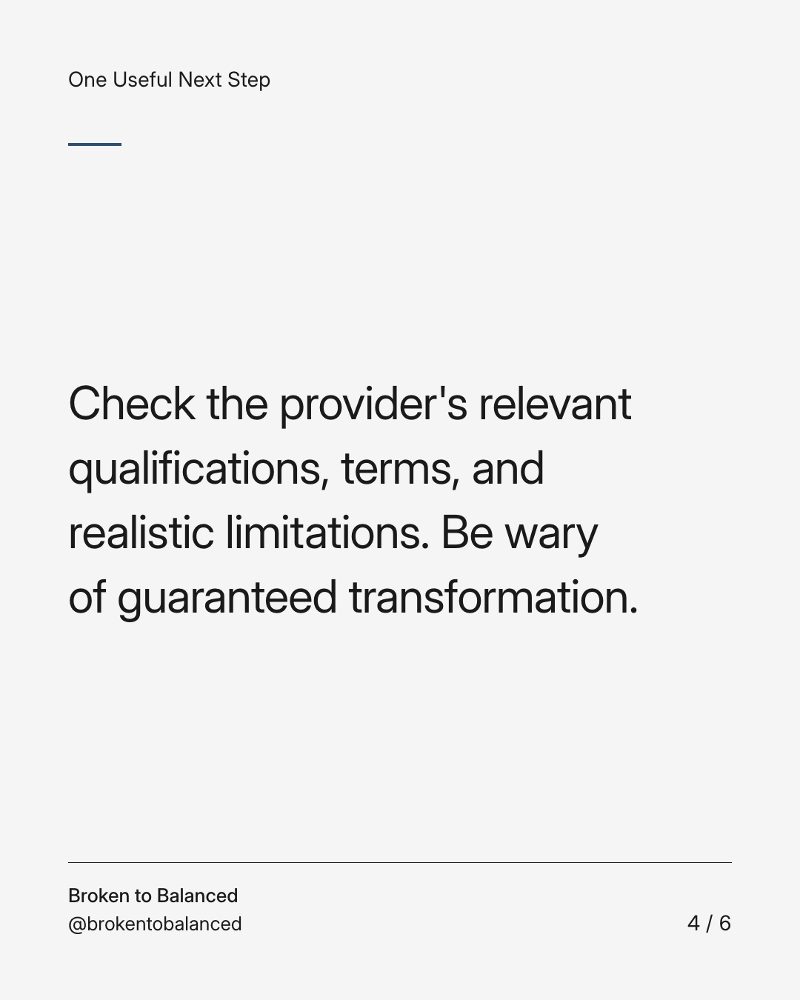
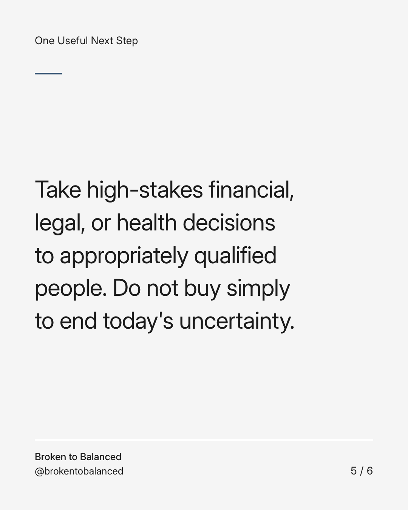
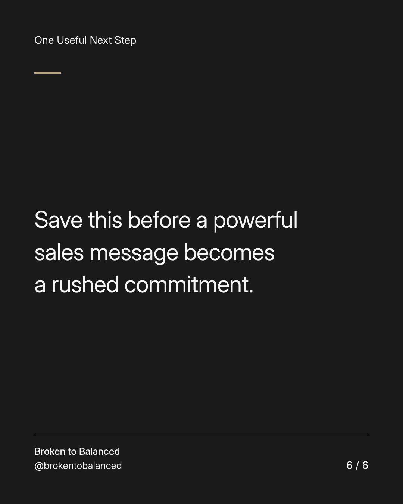

Exact text and accessibility text
Before paying for a solution, make sure you can describe the problem.
Slide 1 of 6. Before paying for a solution, make sure you can describe the problem.

Exact text and accessibility text
A difficult season can make a confident promise feel especially attractive.
Slide 2 of 6. A difficult season can make a confident promise feel especially attractive.


Exact text and accessibility text
Write what you actually need, what the offer includes, what it costs, and what claims remain unverified.
Slide 3 of 6. Write what you actually need, what the offer includes, what it costs, and what claims remain unverified.


Exact text and accessibility text
Check the provider's relevant qualifications, terms, and realistic limitations. Be wary of guaranteed transformation.
Slide 4 of 6. Check the provider's relevant qualifications, terms, and realistic limitations. Be wary of guaranteed transformation.


Exact text and accessibility text
Take high-stakes financial, legal, or health decisions to appropriately qualified people. Do not buy simply to end today's uncertainty.
Slide 5 of 6. Take high-stakes financial, legal, or health decisions to appropriately qualified people. Do not buy simply to end today's uncertainty.


Exact text and accessibility text
Save this before a powerful sales message becomes a rushed commitment.
Slide 6 of 6. Save this before a powerful sales message becomes a rushed commitment.
Exact caption
Plain-text fallback: select and copy the caption.